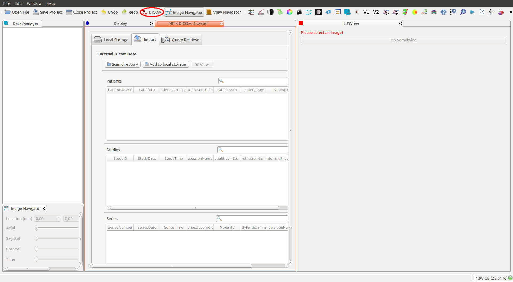
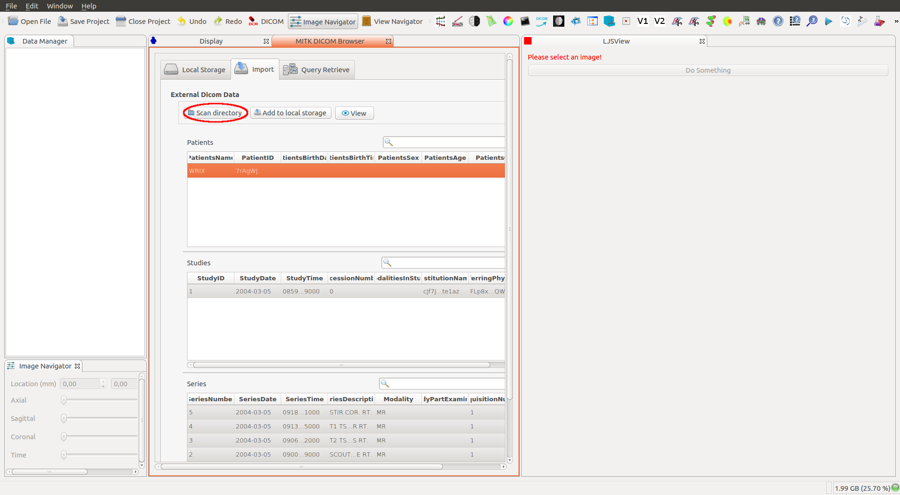
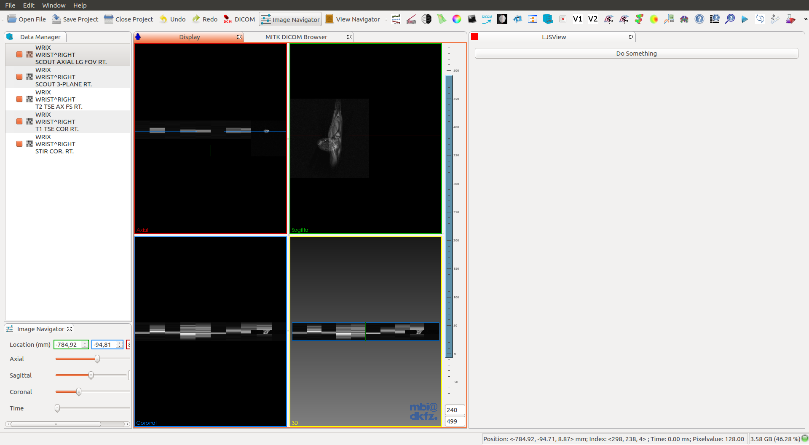
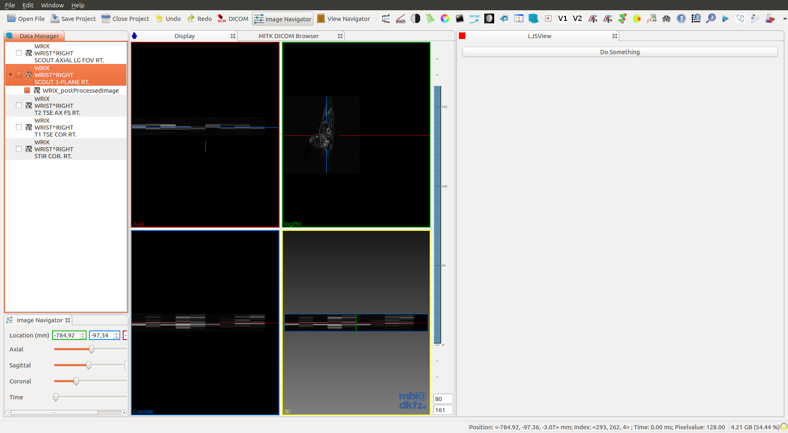
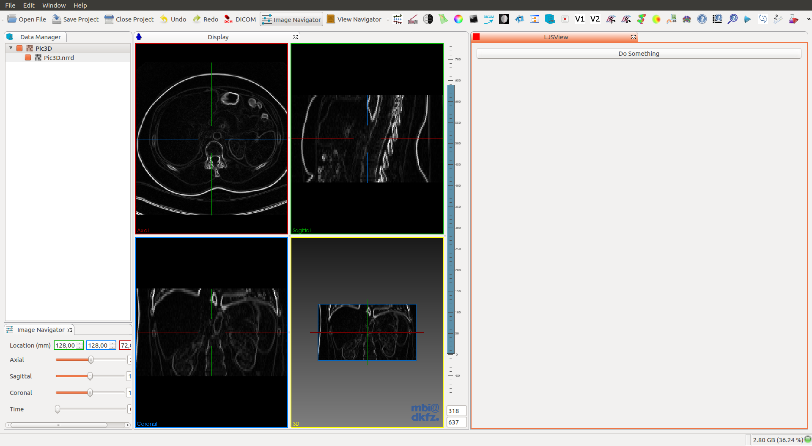

Extending your MITK plugin¶
-
I recommend that you build MITK with Boost enabled, also adding
filesystemto the variableMITK_USE_Boost_LIBRARIES. It is not strictly necessary, but recommended for this example. -
Following the previous recommendation, you will need to modify your plugin
CMakeLists.txt.
project(com_company_example_python)
mitk_create_plugin(
EXPORT_DIRECTIVE EXAMPLE_PYTHON_EXPORT
EXPORTED_INCLUDE_SUFFIXES src
MODULE_DEPENDS MitkQtWidgetsExt MitkPython
PACKAGE_DEPENDS Boost #Add this line
)
- Boost in your plugin view file
MyView.cpp.
// Boost
#include <boost/filesystem.hpp>
namespace fs = boost::filesystem;
using fs::path;
-
In order to follow this tutorial you will probably need the plugin source code. You can found it in my repository @ljsalvatierra.
Method 1: SimpleITK¶
- Process a SimpleItk image and load it in the MITK Viewer.
//DoImageProcessing()
mitk::Image::Pointer postProcessedImage = this->ProcessSimpleItkImageInPython(image);
this->LoadImage(node, postProcessedImage, name);
Where node is a mitk::DataNode that contains the image. And name is one of the properties of the node.
I have successfully tested the plugin with Raw .nrrd and Dicom .dcm images. The Dicom images must be loaded with the Open Dicom tool, once that is loaded in the DataStorage you can get the image from the node.



How do we send the image to our Python module?
- Import the module.
StringList code = QStringList()
<< "import sys"
<< "try:"
<< " sys.path.append('" + pythonScriptsPath + "')"
<< " import " + pythonPluginName + " as " + pythonPluginNameAlias
<< " plugin_available = True"
<< "except ImportError:"
<< " plugin_available = False"
<< " raise ImportError('No module named " + pythonPluginName + "')"
- If we successfully import the module, call an example function.
<< "if plugin_available:"
<< " try:"
<< " " + pythonOutputImage + " = "
+ pythonPluginNameAlias + "." + pythonPluginFunction
+ "(" + pythonInputImage + ")"
<< " except TypeError:"
<< " raise TypeError('Image Type Error')";
- Run the script.
const std::string command = code.join("\n").toStdString();
m_PythonService->Execute(command, mitk::PythonService::MULTI_LINE_COMMAND);
Ok, but where is pythonOutputImage?
- Thanks to
PythonServicewe can get all the variables saved in the stack.
std::vector<mitk::PythonVariable> list = m_PythonService->GetVariableStack();
mitk::Image::Pointer outputImage;
if ( m_PythonService->DoesVariableExist(pythonOutputImage.toStdString()) )
{
outputImage = m_PythonService->CopySimpleItkImageFromPython(pythonOutputImage.toStdString());
}
Now that we have the image, how do we load it in the Workbench Viewer?
- Create a new node and populate it.
mitk::DataNode::Pointer ds = mitk::DataNode::New();
ds->SetData(image);
ds->SetProperty("name", mitk::StringProperty::New(name + "_postProcessedImage"));
- Add the new node to the
DataStoragewith the original image asParent node.
this->GetDataStorage()->Add(ds,originalImageNode);
- Update the
RenderingManager.
mitk::RenderingManager::GetInstance()->RequestUpdateAll();
And that’s it, you should see the processed image like this.

Method 2: Other (process an image from path)¶
This example doesn't work for dicom images.
- Process an image from path.
std::string imagePath = this->GetDataPath(data);
path p = path(imagePath);
std::string filename = p.filename().string();
std::string postProcessedImagePath = "/tmp/postProcessed_" + filename;
this->ProcessImageInPython(imagePath, postProcessedImagePath);
this->LoadImageFromPath(node, postProcessedImagePath, filename);
Where GetDataPath() is a function to get the image path inside mitk::BaseData.
std::string imagePath = (data->GetProperty("path"))->GetValueAsString();
How do we send the image path to our Python module?
- Import the module, as in the first method (SimpleITK).
QStringList code = QStringList()
<< "import sys"
<< "try:"
<< " sys.path.append('" + pythonScriptsPath + "')"
<< " import " + pythonPluginName + " as " + pythonPluginNameAlias
<< " plugin_available = True"
<< "except ImportError:"
<< " plugin_available = False"
<< " raise ImportError('No module named " + pythonPluginName + "')"
- If we successfully import the module, call and example function.
<< "if plugin_available:"
<< " try:"
<< " " + pythonPluginNameAlias + "." + pythonPluginFunction
+ "('" + pythonInputImage + "','" + pythonOutputImage + "')"
<< " except TypeError:"
<< " raise TypeError('Image Type Error')";
- Run the script.
const std::string command = code.join("\n").toStdString();
m_PythonService->Execute(command, mitk::PythonService::MULTI_LINE_COMMAND);
Now we need to get the output image path.
- Get the path from the variable stack.
std::string outputImage;
std::vector<mitk::PythonVariable> list = m_PythonService->GetVariableStack();
for (auto &i : list){
if ( i.m_Name == pythonOutputImage.toStdString() )
{
outputImage = i.m_Value;
break;
}
}
Load the image in the Workbench Viewer.
- Create a new node and load the image from path.
mitk::StandaloneDataStorage::Pointer ds = mitk::StandaloneDataStorage::New();
mitk::StandaloneDataStorage::SetOfObjects::Pointer dataNodes = mitk::IOUtil::Load(processedImage, *ds);
mitk::DataNode::Pointer node = dataNodes->at(0);
- Add the new node to the
DataStoragewith the original image asParent node.
this->GetDataStorage()->Add(node,originalImageNode);
- Update the
RenderingManager.
mitk::RenderingManager::GetInstance()->RequestUpdateAll();
The result, as before, should look like this.

So what do you think? Did I miss something? Is any part unclear? Leave your comments below.